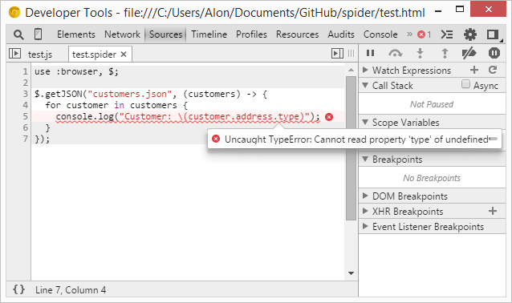
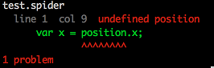

Getting Started
An overview of Spider, how to download and use, and language features.
An overview of Spider, how to download and use, and language features.
Spider is a programming language that compiles to JavaScript (ES5 and ES6 targets). It takes the best ideas of Go, Swift, Python, C# and CoffeeScript.
It's just JavaScript, but better.
fn TimeMachine(pilot) {
this.pilot = pilot;
this.go = fn (noise) {
::console.log(noise);
};
}
fn Tardis()
extends TimeMachine("The Doctor") {
this.go = () =>
super.go("vorp vorp");
}
fn DeLorean()
extends TimeMachine("Marty") {
this.go = () =>
super.go("One point twenty-one gigawatts!");
}
for timeMachine in ::getTimeMachines() {
timeMachine?.go();
}Note: Spider is still work in progress. Make sure to star the project in GitHub if you are interested!
There are many languages that compile to JavaScript. The most popular ones are CoffeeScript, TypeScript and Dart.
But all of them have problems:
Spider tries to learn from its predecessors and build a real programming language that will make developers and teams happy:
== is automatically compiled to ===, and the typeof operator supports array, date, regexp and more.Spider also has great debugging support:
If you want to add your tool to this list, create a pull request in GitHub.
Syntax Highlighting
Building
Other
Install Spider via npm, the node.js package manager:
npm install -g spider-scriptTo execute a script, run:
spider /path/to/script.spiderTo compile a script:
spider -c /path/to/script.spiderThe compiler will generate the output JavaScript file and a source map file for debugging. Note that the original spider file and the source map file aren't necessary for production.
Spider scripts require the Traceur Runtime in order to run.
Node.js
Install traceur-runtime via npm:
npm install traceur-runtimeThen, simply call it before requiring your compiled Spider script.
require("traceur-runtime");
require("compiled-spider-code.js");Browser
Install traceur-runtime via Bower:
bower install traceur-runtimeAnd add a <script> tag to your html:
<script src="/bower_components/traceur-runtime/traceur-runtime.js"></script>Spider provides 2 targets: ES5 and ES6, where ES5 is the default target.
To compile to ES6, use the --target option:
spider -c --target=ES6 /path/to/script.spiderNote that ES6 code doesn't depend on the Traceur Runtime.
All Spider code is compiled to JavaScript strict mode and wrapped in Immediately-Invoked Function Expression (IIFE).
In Spider, all uses of the global scope must be explicit. Use :: to access the global scope.
::console.log("Hello world!");You can also pull global variables into the local scope with the use statement:
use console;
// 'console' doesn't need '::' before it because of 'use'
console.log("Hello world!");For convenience, you can also use :browser to automatically import DOM global variables, and use :node to automatically import Node.js-related global variables.
| :browser | :node |
|---|---|
| console | console |
| window | global |
| document | require |
| screen | exports |
| location | module |
| navigator | process |
| setTimeout | setTimeout |
| alert |
The Spider compiler will raise an error if you try to refer to a variable that doesn't exist in the current scope or in one of its parents.

Scoping just works, without any surprises. Spider will protect you against any unintended behaviour.
Additionally, Spider's var keyword is always compiled to let.
In Spider, logical operators always result in a boolean value regardless of the types passed to it. In addition, == is automatically compiled to ===.
x = false or 5; // x == true;
x = 5 and 4; // x == true;
x = 1 == "1"; // false (== compiles to ===)Note that Spider adds the and and or operators that behave exactly like && and || respectively.
Spider provides the null-coalescing operator to replace the useful options.property || defaultValue idiom.
Spider's typeof operator returns the lowered-cased [[Class]] internal property of the argument.
typeof { a: 4 }; // "object"
typeof [1, 2, 3]; // "array"
typeof new Date; // "date"
typeof new Number(4); // "number"
typeof new String("abc"); // "string"
typeof new Boolean(true); // "boolean"String interpolation is a way to construct a new string from a mix of constants, variables, literals, and expressions by including their values inside a string literal.
var multiplier = 3;
var message = "\(multiplier) times 2.5 is \(multiplier * 2.5)";
// message is "3 times 2.5 is 7.5"Multiline strings are allowed in Spider. Lines are joined by a single space unless they end with a backslash. Indentation starts from the first quote character column. The tab character is calculated as 4 spaces.
var mobyDick = "Call me Ishmael. Some years ago --
never mind how long precisely -- having little
or no money in my purse, and nothing particular
to interest me on shore, I thought I would sail
about a little and see the watery part of the
world...";Functions in Spider are declared using the fn keyword:
fn square(x) {
return x * x;
}
var cube = fn (x) {
return square(x) * x;
};Functions can also be expressed using the arrow syntax:
var isEven = (x) -> x % 2 == 0;
app.controller("MyCtrl", ($scope, MyService) -> {
$scope.items = [];
});Spider provides the fat arrow syntax to bind the current scope:
fn Animal(name) {
this.name = name;
this.printName = () =>
console.log(this.name);
}Functions may also have default values for arguments, which will be used if the incoming argument is missing (null or undefined).
fn legCount(animal = "spider") {
switch animal {
case "spider": {
return 8;
},
default: {
return 2;
}
}
}The JavaScript arguments object is a useful way to work with functions that accept variable numbers of arguments. Spider provides splats ..., both for function definition as well as invocation, making variable numbers of arguments a little bit more palatable.
var gold, silver, rest;
fn awardMedals(first, second, others...) {
// others is an array
gold = first;
silver = second;
rest = others;
}
var contenders = [
"Michael Phelps"
"Liu Xiang"
"Yao Ming"
];
awardMedals(contenders...);Instead of just adding classes, Spider embraces JavaScript prototypes and makes them much easier to use. Spider's inheritance is compatible with almost any JavaScript class implementation out there.
fn Animal(name) {
this.move = fn (distance) {
alert("\(name) moved \(distance)m.");
};
}
fn Snake(name)
extends Animal(name) {
this.move = fn() {
alert("Slithering...");
super.move(5);
};
}
fn Horse(name)
extends Animal(name) {
this.move = fn() {
alert("Galloping...");
super.move(45);
};
}
var sam = new Snake("Sammy the Python");
var tom = new Horse("Tommy the Palomino");
sam.move();
tom.move();Currying is a technique of transforming a function which takes multiple arguments in such a way that it can be called as a chain of functions.
fn add(a, b, c) {
return a + b + c;
}
var addOne = add^(1);
console.log(addOne(2, 3)); // => 6
var addFive = addOne^(4);
console.log(addFive(1)); // => 6Curried functions work extremely well in functional-style programming.
fn sortBy(key, array) {
return array.sort((a, b) -> a[key] - b[key]);
}
var sortById = sortBy^("id");
var sortByAge = sortBy^("age");
var people = [
{ id: 1, name: "Daniel", age: 27 },
{ id: 5, name: "John", age: 18 },
{ id: 2, name: "Robot", age: 70 }
];
var peopleById = sortById(people);
var peopleByAge = sortByAge(people);In Spider, if statements (as well as most other statements) can be written without the use of parentheses.
if happy and knowsIt {
clapHands();
} else {
showIt();
}There's no ternary operator (?:) in Spider. Instead, Spider provides Python-like if expressions:
var date = sue if friday else jill;Spider provides 3 types of for statements. The first type allows a block of code to be executed repeatedly while incrementing a counter, as long as a condition remains true.
for var i = 0; i < 5; i++ {
::console.log(i);
}A for-in statement allows a block of code to be executed once for each item in an array.
var foods = ['broccoli', 'spinach', 'chocolate'];
for food in foods {
eat(food);
}You can also get the index of the item by adding another variable:
for food, i in foods {
console.log("Eating food number \(i).");
eat(food);
}A for-of statement allows a block of code to be executed once for each property in an object.
var player = {
"name": "Daniel",
"address": "Tel Aviv",
"age": 18
};
for key of player {
console.log("Found property \(key).");
}You can also get the value of the key by adding another variable:
for key, value of player {
console.log("\(key): \(value)");
}Spider provides a while loop that behaves exactly like the JavaScript equivalent except parenthesis aren't required:
while supply > demand {
buy();
}For readability, Spider also provides an until loop that is equivalent to while not:
until supply > demand {
sell();
}Spider provides a do-while loop that behaves exactly like the JavaScript equivalent except parenthesis aren't required:
do {
buy();
} while supply > demand;Spider provides Python-like list comprehensions. List comprehensions provide a concise way to create list from existing list.
var list = [1, 2, 3, 5, 6, 7];
var doubles = [x * 2 for x in list];You can also filter elements with a condition:
var doubles = [x * 2 for x in list if x % 2 == 0];It's a little difficult to check for the existence of a variable in JavaScript. if (variable) ... comes close, but fails for zero, the empty string, and false. The existential operator ? returns true unless a variable is null or undefined
if game? {
play();
}The accessor variant of the existential operator ?. can be used to soak up null references in a chain of properties. Use it instead of the dot accessor . in cases where the base value may be null or undefined. If all of the properties exist then you'll get the expected result, if the chain is broken, undefined is returned instead of the TypeError that would be raised otherwise.
var zip = lottery.drawWinner?().address?.zipcode;The null-coalescing operator ?? returns the right expression if the left expression is null or undefined.
var name = options.name ?? "default name";The in operator checks if an array contains an specific item, or if an object contains a specific property.
var people = [billy, robin, daniel];
var details = {
"price": 45,
"address": "New York, USA",
"age": 27
};
console.log(billy in people); // => true
console.log("address" in details) // => trueChained comparisons make it easy to test if a value falls within a certain range.
var isHealthy = 200 > cholesterol > 60;To simplify math expressions, ** can be used for exponentiation.
var volume = a ** 3; // => Math.pow(a, 3)The # operator performs integer division.
var floor = a # b; // => Math.floor(a / b)The %% operator provides true mathematical modulo.
var modulo = a %% b; // => (a % b + b) % bSpider provides the <- operator that can be used either with one argument or with two arguments. If used with two argument, e.g:
apples <- apple;Then it behaves as a push operator, and compiles to apples.push(apple);
If <- is used with one argument, e.g:
console.log(<-channel);Then it behaves as a get operator, and compiles to await channel.get().
Note that the <- operator is mostly used for Channels.
The range literal provides a simple way to generate a numbers array. With two dots (3..6), the range is inclusive (3, 4, 5, 6); with three dots (3...6), the range excludes the end (3, 4, 5)
var a = [1..5]; // => [1, 2, 3, 4, 5]
var b = [1...5]; // => [1, 2, 3, 4]It can also work in the opposite direction:
var c = [5..1]; // => [5, 4, 3, 2, 1]
var d = [5...1]; // => [5, 4, 3, 2]Ranges can also be used to extract slices of arrays.
var numbers = [1...10];
var start = numbers[0..2];
var middle = numbers[3...-2];
var end = numbers[-2..];
var copy = numbers[..];The same syntax can be used with assignment to replace a segment of an array with new values, splicing it.
numbers[3..6] = [-3, -4, -5, -6];The switch statement in Spider is much more powerful than the JavaScript equivalent:
switch day {
case "Monday": {
go(work);
}
case "Tuesday": {
go(relax);
}
case "Friday", "Saturday": {
go(bingo);
}
default: {
go(work);
}
}The cases of a switch statement do not "fall through" to the next case in Spider, avoiding common JavaScript errors caused by a missing break statements.
If you really need JavaScript-style fallthrough behaviour, you can opt in to this behavior on a case-by-case basis with the fallthrough statement.
switch integerToDescribe {
case 2, 3, 5, 7, 11, 13, 17, 19: {
description += " a prime number, and also";
fallthrough;
}
default: {
description += " an integer.";
}
}Switch statements can also be used with ranges:
switch score {
case ..60: {
return "F";
}
case 60..70: {
return "D";
}
case 70..80: {
return "C";
}
case 80..90: {
return "B";
}
default: {
return "A";
}
}Spider provides pattern matching with array expressions.
fn fizzbuzz(i) {
var result = [i % 3, i % 5];
switch result {
case [0, 0]: {
return "FizzBuzz"
}
case [0, ]: {
return "Fizz"
}
case [, 0]: {
return "Buzz"
}
default: {
return "\(i)"
}
}
}
for number in [1...100] {
console.log(fizzbuzz(number))
}Spider's modules are based on ES6 modules. A module can export multiple things by prefixing their declarations with the keyword export. These exports are distinguished by their names and are called named exports.
// lib.js
export fn square(x) {
return x * x;
}
export fn diag(x, y) {
return sqrt(square(x) + square(y));
}
// main.js
import square, diag from 'lib';
console.log(square(11)); // 121
console.log(diag(4, 3)); // 5If you want to, you can also import the whole module and refer to its named exports via property notation:
import * as lib from 'lib';
console.log(lib.square(11)); // 121
console.log(lib.diag(4, 3)); // 5You can also export a default export. For example, an Spiderified jQuery might look like this:
// jquery.js
var jQuery = fn() {};
jQuery.prototype = {
// ...
};
export default jQuery;Then, an app that uses jQuery could import it with:
import 'jquery' as $;The default export of the "jquery" module is now aliased to $.
A default export makes the most sense as a module's "main" export, like the jQuery object in jQuery. You can use default and named exports in parallel.
Destructuring is a powerful technique that makes it possible to extract data from arrays or objects using a syntax that mirrors the construction of array and object literals.
var foo = ["one", "two", "three"];
// without destructuring
var one = foo[0];
var two = foo[1];
var three = foo[2];
// with destructuring
var [one, two, three] = foo;After executing this code, b is 1 and a is 3. Without destructuring, swapping two values requires a temporary variable (or, in some low-level languages, the XOR-swap trick).
var a = 1;
var b = 3;
[a, b] = [b, a];Thanks to destructuring assignment, functions can return multiple values. While it's always been possible to return an array from a function, this provides an added degree of flexibility.
fn f() {
return [1, 2];
}As you can see, returning results is done using an array-like notation, with all the values to return enclosed in brackets. You can return any number of results in this way. In this example, f() returns the values [1, 2] as its output.
var [a, b] = f();
console.log("A is \(a) and B is \(b)");You can also ignore return values that you're not interested in:
fn f() {
return [1, 2, 3];
}
var [a, , b] = f();
console.log("A is \(a) and B is \(b)");After running this code, a is 1 and b is 3. The value 2 is ignored.
var o = {p: 42, q: true};
var {p, q} = o;
console.log(p); // 42
console.log(q); // true
// Assign new variable names
var {p: foo, q: bar} = o;
console.log(foo); // 42
console.log(bar); // trueThis shorthand allows you to skip repeating yourself when the property name and property value are the same in an object literal.
fn getPoint() {
var x = ...;
var y = ...;
...
return {x, y};
}This shorthand allows you to define methods on objects. The methods are non enumerable so that they behave like the methods on the built in objects.
var object = {
value: 42,
toString() {
return this.value;
}
};Spider provides C#-like async functions.
With async functions, you can await on a promise. This halts the function in a non-blocking way, waits for the promise to resolve & returns the value. If the promise rejects, it throws with the rejection value, so you can deal with it using catch.
async fn loadStory() {
try {
var story = await getJSON('story.json');
addHtmlToPage(story.heading);
for chapter in story.chapterURLs.map(getJSON) {
addHtmlToPage((await chapter).html);
}
addTextToPage("All done");
} catch err {
addTextToPage("Argh, broken: " + err.message);
}
}Spider's await works with promises by default. If you want to use it with Node.js-style callbacks, you can use the bluebird library.
This technique completely solves callback hell.
var fs = Promise.promisifyAll(require("fs"));
async fn readFiles() {
var file1 = await fs.readFileAsync("file1.json");
var file2 = await fs.readFileAsync("file2.json");
var file3 = await fs.readFileAsync("file3.json");
var file4 = await fs.readFileAsync("file4.json");
console.log(file1, file2, file3, file4);
}Parallel version:
var fs = Promise.promisifyAll(require("fs"));
async fn readFiles() {
var [file1, file2, file3, file4] = await Promise.all([
fs.readFileAsync("file1.json"),
fs.readFileAsync("file2.json"),
fs.readFileAsync("file3.json"),
fs.readFileAsync("file4.json")
]);
console.log(file1, file2, file3, file4);
}Spider provides Go-like channels. Channels are an easy way to communicate between sequential processes. Channels can be used everywhere: UI abstraction, Node.js services (e.g: Mailing List), and more.
var channel = new Channel();
fn sendMail(title, body) {
var message = { title, body };
channel <- message;
console.log("Message added to queue.");
}
go {
while true {
smtp.send(<-channel);
}
};To use channels, you must install the spider-channels runtime library.
Browser
Install the library via Bower:
bower install --save spider-channelsNode.js
Install the library via npm:
npm install --save spider-channelsYou can then import Channel with:
var { Channel } = require("spider-channels");
var chan = new Channel();
...